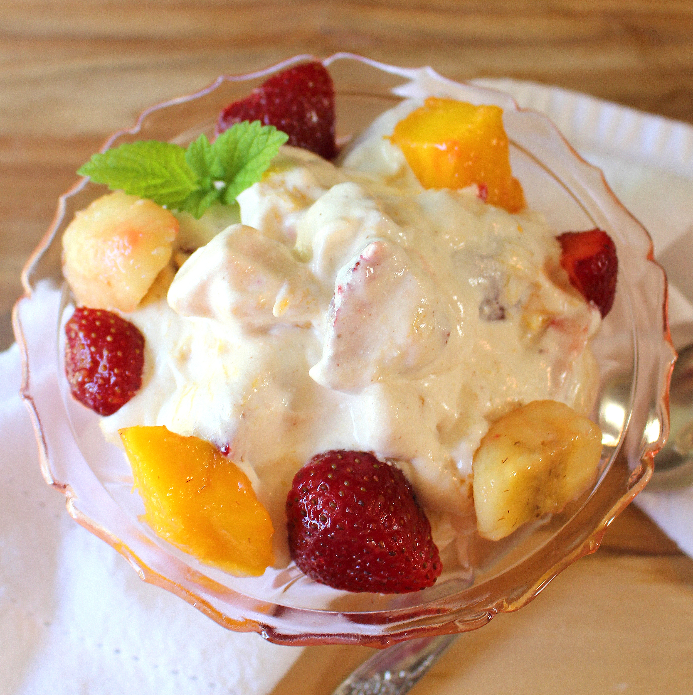

Ingredients

- 1 lbs cream cheese (Philadelphia)
- 1 pack whipped topping (8 oz)
- 1/2 can sweetened condensed milk (14 oz)
- 1 can mixed fruits (avoid w/cherry juice and preferably in pear juice & select w/o bananas)
- 1 can diced pineapples
- Some fresh grapes
- Blanched almonds, pistachios, and walnuts
Instructions
- In a huge vessel first blend cream cheese with a hand blender.
- When it becomes smooth, add whipped topping and blend.
- Add 1/2 can of condensed milk.
- Blend them all well, then add all fruits without juice.
- Mix well with a spoon and add the nuts.
- Chill and serve.